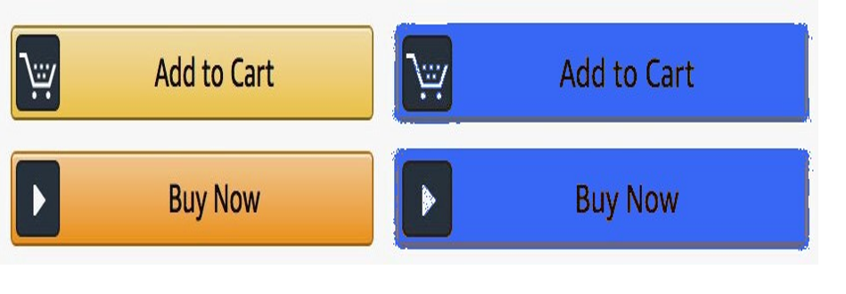
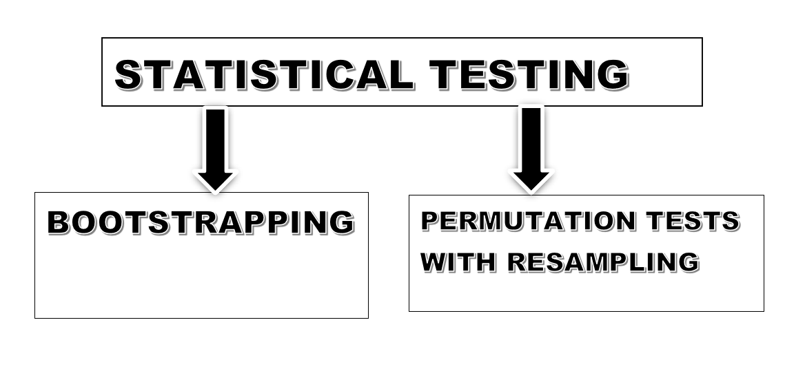
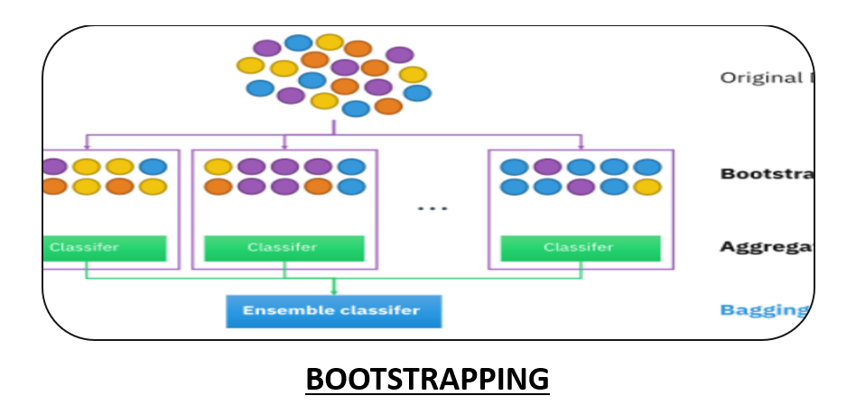
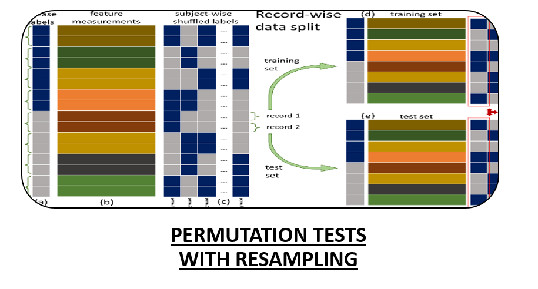

About the A/B Testing: A/B testing (also known as bucket testing or split-run testing) is a user experience research methodology. A/B tests consist of a randomized experiment with two variants, A and B. It includes application of statistical hypothesis testing or "two-sample hypothesis testing" as used in the field of statistics. A/B testing is a way to compare two versions of a single variable, typically by testing a subject's response to variant A against variant B, and determining which of the two variants is more effective.
Problem we are trying to solve:
sWhether to change the color of the buying button of amazon into blue or not. We are conducting a test and trying to build our concepts by evaluating if we changed the amazon buying button to blue, whether it will increase or decrease our customer sales? We are conducting simple tests and trying to connect dots of various business factors which are related to the sales.

Concept: we are conducting the test in which we will split our customers(data) into some ratio and will compare both components with each other. The test is basically the split and run test.
Lets get started!
Suppose you are a data scientist of the amazon and you found that if we change the color of buying button into blue then it will result in increase of our sales. Now there is a risk! What if you’re wrong that the blue buying button will reduce the sales instead increasing it. Therefore, you are conducting some tests to make your theory strong and concrete. You decided to use the A/B testing to analyze the behavior of the customer reacting to the blue color of buying button.
How will you do?
We are dividing the tests into the following steps to conduct our experiment:
Step 1: Dividing a set of customers into Set A(control) and Set B(experiment):
In this step we will divide our customer for example suppose our total number of customers are 1000(in real life the customers are in millions), so we will divide 1000 customers into Set A(control) and Set B(experiment).
Step 2:: Deciding what percent of customers should be in Set A and Set B:
Dividing the customers is a tricky part because suppose if we divide the customers 50/50 i.e., 500 customers in Set A and Set B. Suppose what if your experiment went wrong and the result would the loss of 500 customers as our company cannot afford it so what we will do is we will send 10 percent website traffic to Set B(experiment) which will be using the blue color button for buying and remaining 90 percent traffic will be send to the Set A(control). In real life experimenting on whole of our data is super risky and companies most often dont do this. They do experiment on small chunks of data so that if our experiment went wrong then there are super less chances of getting losses.
Step 3: Using matrices to compare Set A(control) with Set B(treatment):
Now in this we will convert our data into single column matrices using python codes and it is just basically using some NumPy Nd array operations which will convert the data into N-Dimensional arrays. When the data in converted in the form of matrices now we can perform our numerical analysis on this.
Step 4: Selecting the best measure to compare Set A(compare) with Set B(treatment):
Now when the data is converted into an array then after it we have to find the best measure to compare the results. Now the question what measures we should choose?
Mean: Mean is basically the average of all the numerical values in our dataset. Here we are having the data of customers and we divided that data into Set A(control) which is having the 90 percent of our data and Set B(treatment) which is having the 10 percent of our data.
There is a problem, if we take mean of both because suppose there is a customer(only few of them) who bought a diamond ring or a Rolex watch which will have very high selling then obviously the mean of the Set B(treatment) would be higher and therefore we will conclude the wrong results as mean values are not prone to outliers and that few rich customers are just the outliers in our dataset.
Question: Which measure should we choose to compare the results?
Answer: The median would be the nice measure in this case as median are prone to outliers and it will not consider those few rich customers while taking the average of our data. Median: We will compare the median of Set A(control) with the median of Set B(treatment) and will draw the conclusions on it. Now there is a problem in this experiment as we can see the Set B have very small number of data about 100 customers which is because we cannot train our on whole of our customers but again think about it what if the Set B have the customers(all 100 customers) who tend to spend more than the average number of customers then it is obvious that our median of Set B(treatment) would be higher but in reality we are making our model only on those customers who tend to spend more money while buying goods using blue color button.
How will be we use the Median ?
We will compare the median of Set A(control) with the median of Set B(treatment) and will draw the conclusions on it. Now there is a problem in this experiment as we can see the Set B have very small number of data about 100 customers which is because we cannot train our on whole of our customers but again think about it what if the Set B have the customers(all 100 customers) who tend to spend more than the average number of customers then it is obvious that our median of Set B(treatment) would be higher but in reality we are making our model only on those customers who tend to spend more money while buying goods using blue color button.
❌PROBLEM: The samples are not randomly selected and we can see some sort of biasness in our model.
✅SOLUTION: To solve this problem we will study the concept of hypothesis testing along with the various statistics tests:.

Key point:
Now we don’t have the data of amazon customers so we will use the random numbers by using pseudo random generator number.
1. BOOTSTRAPPING
Bootstrap aggregating, also called bagging (from bootstrap aggregating), is a machine learning ensemble meta-algorithm designed to improve the stability and accuracy of machine learning algorithms used in statistical classification and regression. It also reduces variance and helps to avoid overfitting. Although it is usually applied to decision tree methods, it can be used with any type of method. Bagging is a special case of the model averaging approach.
How it works?
Step 1: It assumes that the data is random and independent.
Step 2: we takes the sample from the population (let’s say 100 samples), we will do the random sampling of that 100 samples with replacements and we will do these samples K times.
Step 3: After getting the sampled data with replacements we will compute the median of each samples and we will compute the confidence interval of that sampled data to understand our samples behavior more intuitively.
Pseudo code:
# Synthetically create a sample with random and independent observations
# Let us use a sample of synthetic data (from some disb)
# we generated so that we know the population medain to compare against
# Let sample from Beta disb with alpha = 2,beta=2 which has a population median of 0.5
# Refer: https://en.wikipedia.org/wiki/Beta_distribution Median ~ (alpha-1/3)/(alpha+beta-2/3) if alpaha, beta >1
n=100;
S = np.random.beta(2,2,n) # data can have any distribution.
#Q. Given S, how to estimate the popualtion median?
# function to generate a bootstrap(sampling with repalcement) sample of size n given a sample S. Each sample
def bootstrapSample(S, m):
n = S.size; # size of S
indx = np.random.randint(n, size=m) # generates random integer indices from discrete unif random disb
r = S[indx]
return r
m = 50; # size of each bootstap sample
k = 1000; # number of botostrap samples
medians = np.zeros(k)
for i in range(k):
medians[i] = np.median(bootstrapSample(S, m))
print(medians.size)
output : 1000
Question: How can we use this concept in our amazon blue button experiment?
Answer: This method is super prone to the outliers in our dataset and gives us mostly the accurate results. We use bootstrapping on our Set A(control) and Set B(experiments) ad will see compare their medians with each other.
2. PERMUTATION TESTING WITH RESAMPLING:
A permutation test (also called re-randomization test) is an exact test, a type of statistical significance test in which the distribution of the test statistic under the null hypothesis is obtained by calculating all possible values of the test statistic under all possible rearrangements of the observed data points. Permutation tests are, therefore, a form of resampling. In other words, the method by which treatments are allocated to subjects in an experimental design is mirrored in the analysis of that design. If the labels are exchangeable under the null hypothesis, then the resulting tests yield exact significance levels; see also exchangeability. Confidence intervals can then be derived from the tests.
We will follow the below steps in this test:
Step 1: Test statistics: We know that the selling price follows the pareto distribution which shows that the data can have some outliers.
Step 2:
Null hypothesis (Ho): There is no difference between the median of the current color of buying button (lets Mo) and the median of the color of blue button(lets Mb):
[Mo-Mb=0] -----> Null hypothesis but there can be some difference (very small) in the median in real life: lets say it is 0.06
Alternative hypothesis: That there is a difference between the median of both.
Step 3: We have 1000 customers and we will divide these 1000 customers in the Set A(control) and Set B(treatment) with resampling 50 times to avoid the biasness in our samples.
Step 4: Now we will find the probability of our test statistics (Mo and Mb) greater than 0.06 when our null hypothesis is true.
Probability (Mo – Mb >= 0.06 when Ho is true)
Now if Probability (Mo – Mb >= 0.06 when Ho is true) is less than 5 percent then we will accept our Null hypothesis and will conclude that blue button can increase the sales.
If Probability (Mo – Mb >= 0.06 when Ho is true) is more than 5 percent then we will reject our Null hypothesis (Ho) and will accept our alternative hypothesis i.e. There is difference between the median and will not change our button to blue.
Pseudo code:
# Let us write a function for this
def hypTestMedian(PW,PM):
# observed value of W_Median-M_Median
obs = abs(np.percentile(PW,50) - np.percentile(PM,50))
# H0: There is no difference between original and blue button
# P = Concatenate(PM, PW)
P = np.concatenate((PM,PW)) # tuple of arrays as param. Common mistake
k=1000 # number of resamplings
testStats = np.zeros(k)
for i in range(k):
# resampling: split P into two random halves and tag hald as blue and the rest as original.
# Refer: https://stackoverflow.com/questions/3674409/how-to-split-partition-a-dataset-into-training-and-test-datasets-for-e-g-cros
np.random.shuffle(P)
tmp_original, tmp_blue = P[:n], P[n:]
# Compute test-statistic
testStats[i] = abs(np.percentile(tmp_blue,50) - np.percentile(tmp_original,50))
# Hypothesis testing: P(testStat > Obs | H0 ) can be estimated from testStats.
num_h0 = np.sum(testStats >= obs)
prob = num_h0/k
return prob
#1.
n=100; # sample size
np.random.seed(100)
PM = np.random.pareto(a=5.0,size=n)
PW = np.random.pareto(a=4.0,size=n)
print(hypTestMedian(PW,PM))
output : 3.6% #accepting our null hypothesis
Conclusion:
These statistical tests help us in understanding the relationship between the samples and these techniques are used in Amazon, Netflix in movie recommendations and many other companies in day-to-day activities while performing decision making. These techniques give us the graphical as well as the numerical intuition about that data and its behavior. We can conduct this experiment if we have the real data of amazon customers and by just using python, we get to know how to make decisions more efficiently with the help of data and computers.